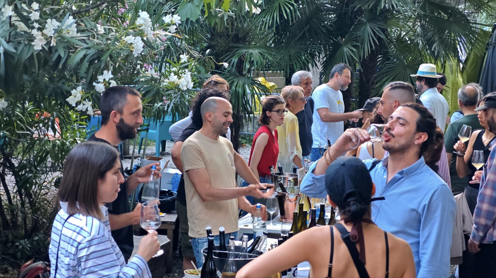
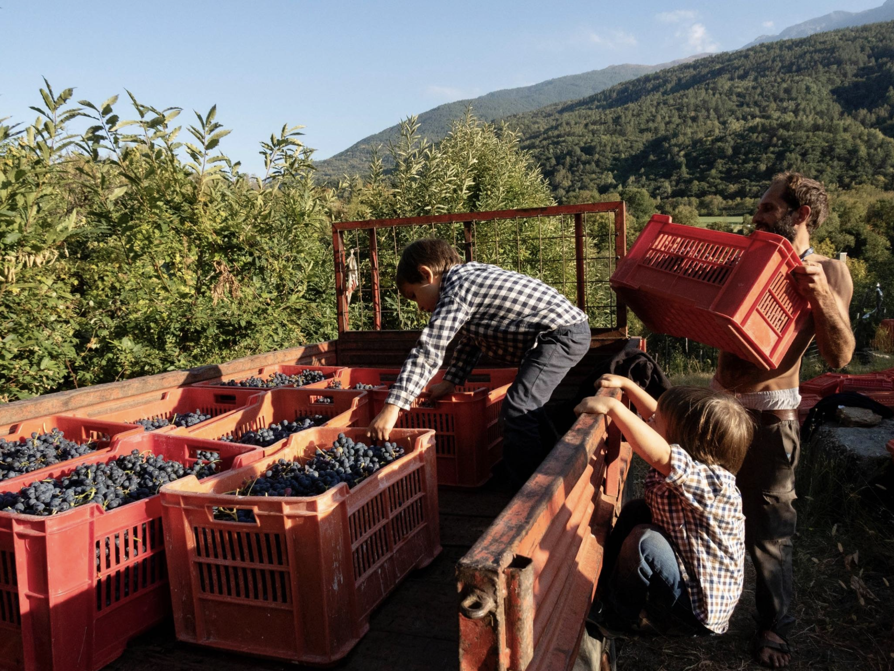
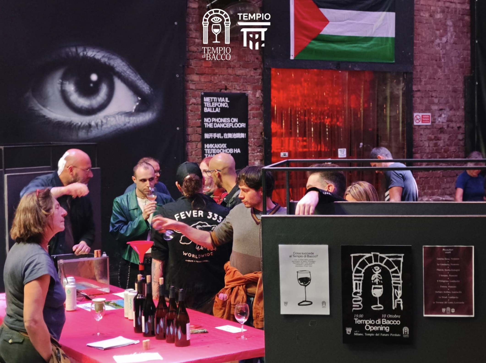

What do we drink, when we drink wine?
It's a deceptively simple question, one we rarely stop to ask. We look at a label, recognize a denomination, choose a bottle for its price, its producer, or simply because we like it. But behind every wine there is much more: a land, a labor, a set of choices, and above all, people.
In recent years there has been a great deal of talk about "natural wine." But what is it, exactly? There is no single, universally agreed definition of natural wine. Broadly speaking, the term describes a way of working that starts in the vineyard: organic or biodynamic farming, certified or not, minimal intervention in the cellar, limited use of additives, and the will to let the wine follow, as far as possible, its own course.
In recent years, however, "natural wine" has become a label, a commercial category. A convenient definition, but inevitably a simplifying one, because within it coexist very different practices, ideas, and ways of understanding the work of the vineyard and the cellar. There is no single way to grow a vine, just as there is no single idea of nature.
We need to stop obsessing over what makes a wine "natural" and focus instead on who produces it, how they produce it, and within what economic and social system that bottle is trying to find its own space.
It is from this ideological core that Tempio di Bacco takes shape — the project of the Tempio del Futuro Perduto, the first socio-cultural center to be formally recognized under Italian law, dedicated to small artisanal, independent, and resistant wine-growers. Tempio di Bacco is a cultural outpost devoted to agricultural wine, a meeting point for producers who, despite their differing practices, share a certain idea of work, of agriculture, and of their relationship with wine.

What does it mean today to be a resistant wine-grower?
Many of the producers who take part in Tempio di Bacco work just a few hectares of land. They are often family-run businesses or small operations, where the person who tends the vineyard directly oversees, or nearly so, every stage of the work: the land, the plants, the pruning, the harvest, the cellar, the bottling.
The scale of production changes the relationship a person can have with their own work, with the land, and with what they produce. Producing little means being able to follow directly what happens, to know every row of vines, to face a difficult season, to accept that one vintage will not be identical to the last, and that wine, simply, cannot always be the same as itself.
In a market built on standardization, accepting the wild and unpredictable nature of the vine can already be a choice in itself.

In his book Vino al vino (1968–1975), Mario Soldati crossed a wine-growing Italy made first of all of people, places, dialects, local varieties, and profound differences. Wine was not a product to be classified or scored, but the result of a complex relationship between those who worked the land and the place where that land existed and endured. Even then, Soldati observed and criticized the process of standardizing and taming wine to the demands of consumption.
Today we have drifted far along that same trend: wine is everywhere — in supermarkets, in restaurants, in wine shops, on social media. But this apparent abundance clashes with reality: wine-growers report a decline in people's interest in wine, artisanal wine, that is. Large-scale production has swallowed and regurgitated an extraordinarily fertile history: that of honest agricultural production, respectful of biodiversity and of native ampelography. The market is full of wine, but no one drinks with awareness anymore: wine has lost its ritual, it has lost that aura of being the outcome of a difficult relationship between humankind and nature, it has stopped being an occasion to come together, to be with others, to share.
«The market is saturated with industrial products that have no flavor and no soul. Where has the wine gone? Where has the humanity gone that is its essential component?»
The question becomes even more political when we look at what happens between the cellar and the public: once the wine has been made, how does it reach us? And what do we know about the person who, with their own hands and their own labor, filled that bottle?
To reach us, wine often passes through many layers: distribution, intermediaries, venues, restaurants, wine shops. These are not neutral systems. Every stage carries a cost and inevitably helps decide what circulates most, what finds space, and what instead is left on the margins.
Milan makes this dynamic particularly visible. It is a city where wine seems to occupy more and more space, yet for a small agricultural producer, finding a place, an audience, and a channel through which to sell directly is anything but a given.
Tempio di Bacco was born from the idea of creating, once a month, a fixed meeting point where producers and the public can come together without a long and costly chain of intermediaries necessarily standing between them. A form of short supply chain, certainly, but also something more: it creates the possibility of restoring that lost human relationship, placing wine-growers and the public on the same level, with the chance to ask whoever made that bottle where it comes from, what happened in the vineyard, why they chose to work in a certain way. It means giving wine back a relationship that the long chain of distribution so often renders invisible.

There is another reason why Tempio di Bacco was born precisely at the Tempio del Futuro Perduto. The Tempio itself emerged from the regeneration of an abandoned industrial space, transformed over time into a place of culture, sociality, mutual aid, and political vision — an urban void rescued from neglect and given back to a community.
Anyone who chooses to go on cultivating a small plot of land, to keep a local variety alive, to work in a marginal area, or not to abandon a farming practice, contributes, in their own way, to keeping a place alive.
Not because agriculture and urban regeneration are the same thing, but because in both cases there is a choice: to go on caring for something that, by the logic of the market, appears marginal or unproductive.
This does not mean romanticizing the countryside: farming is hard, physical, uncertain work, increasingly exposed to economic difficulty and to the effects of the climate crisis. And it is not enough to speak generically of sustainability to solve the problems of those who live off their own harvest.
This is what "resistant wine-grower" means: not a romantic image of the small producer fighting against the world, but the concrete choice to go on working a piece of land, accepting the uncertainty of the seasons and trying to keep alive practices and varieties that would have little room within a purely industrial logic.
Tempio di Bacco starts again from here: from the wine-growers and their stories. The appointment is Friday 11 and Saturday 12 September at the Tempio del Futuro Perduto, to meet and celebrate wine together for what it truly is: first and foremost, a story of people.
Bibliography:
Mario Soldati, Vino al vino. Alla ricerca dei vini genuini. I tre viaggi in edizione integrale, Mondadori, 1977
Officina Enoica, Guida al vino critico. Storie di vignaioli artigiani in Italia, Altra Economia, 2017
Jonathan Nossiter, Le goût et le pouvoir, Grasset, 2007